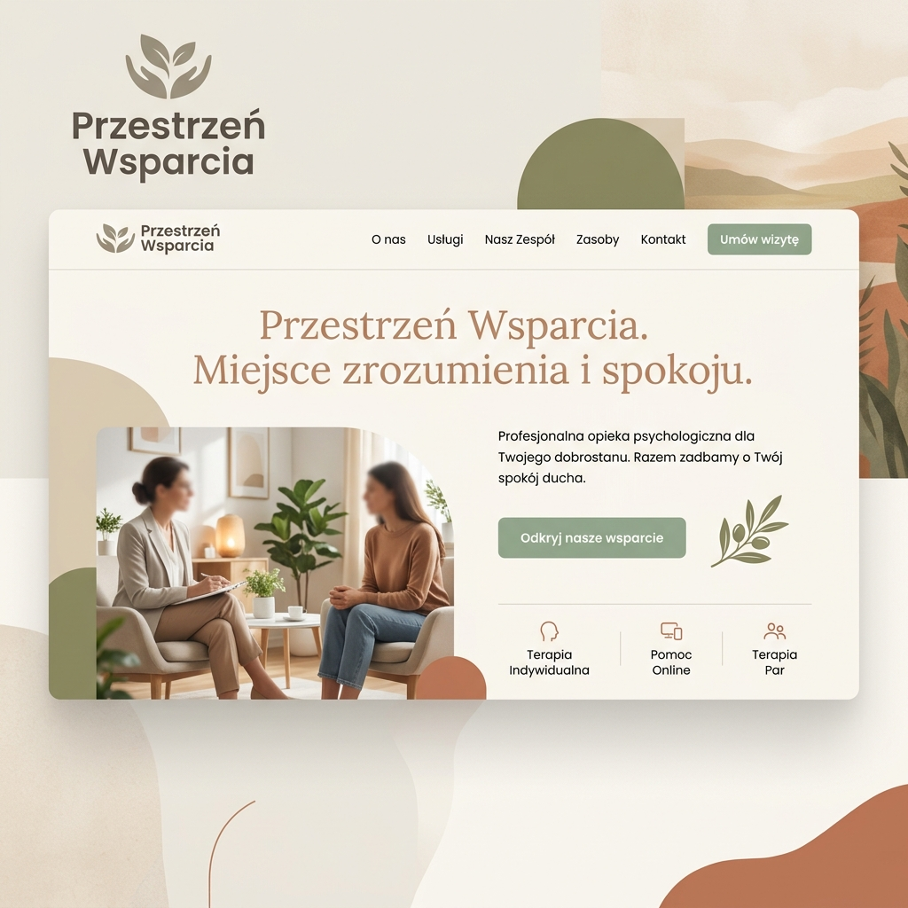

Digital Architecture
Przestrzen is an exploration of how we occupy digital space. By moving beyond 2D interfaces, we can create environments that feel grounded, atmospheric, and reactive.
Using Unreal Engine 5, I build spaces that combine architectural principles with the freedom of virtual exploration.

Atmospheric Immersion
Lighting, texture, and sound design come together to create a sense of presence. Each environment is a study in mood and interaction, designed to be experienced rather than just viewed.
Whether for storytelling, virtual events, or creative hubs, these spaces represent the next frontier of digital interaction.
UE5 Rendering Visualization